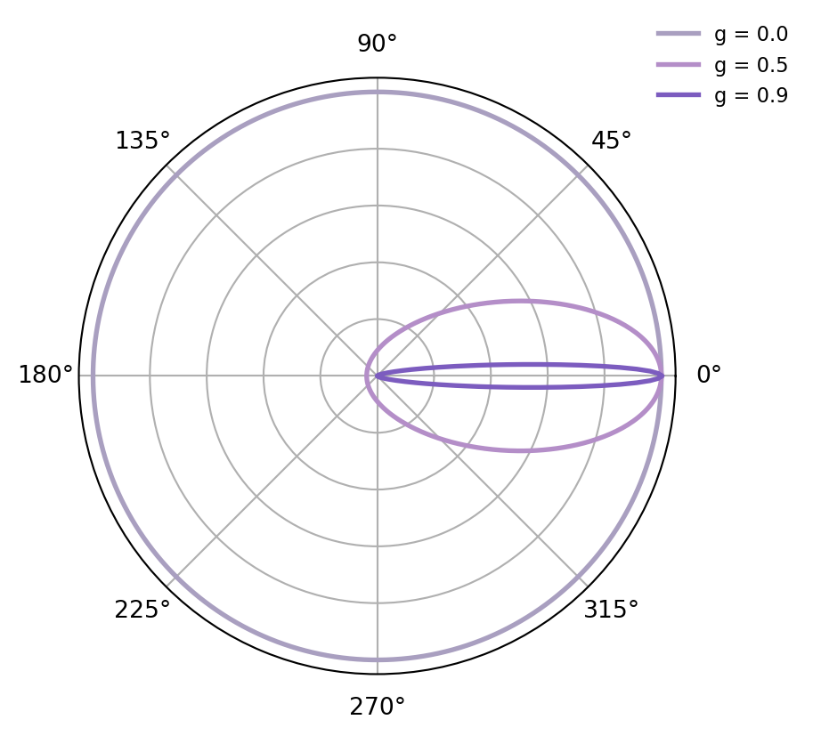
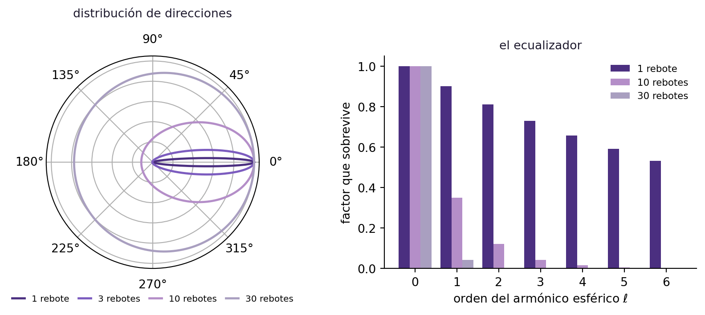
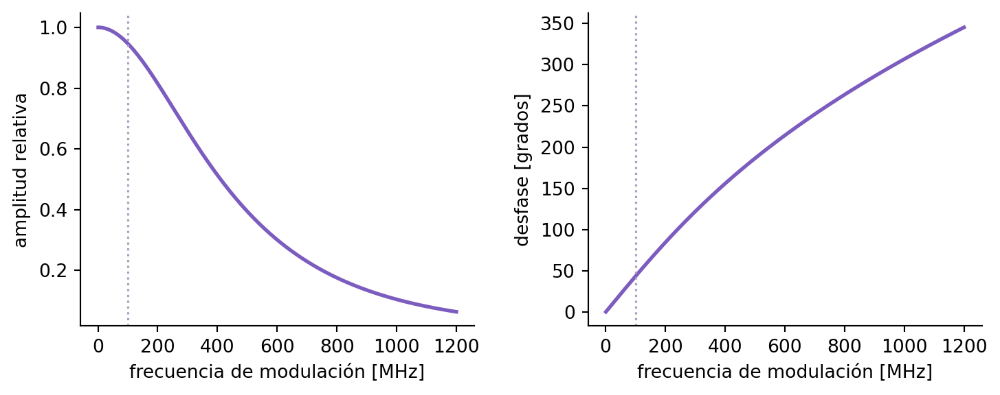

¿Cómo se escribe una ecuación para algo que rebota miles de veces?
STEM
Tesis
Tomografía óptica
De la ecuación de transferencia radiativa a la ecuación de difusión: qué hipótesis hay que hacer sobre el tejido, por qué son razonables, y cómo se pasa de un problema en seis dimensiones a uno en tres. Segunda entrega de la serie sobre mi Trabajo Final.
Fecha de publicación
24 de agosto de 2026
En la entrada anterior apareció, casi de contrabando, una ecuación: la ecuación de difusión que describe cómo se propaga la luz por un tejido. La usé para simular, para dibujar mapas de fase y para armar la matriz de mediciones, pero no dije de dónde sale.
Este post es de dónde sale.
El problema de fondo
Cuando un fotón entra al tejido empieza a rebotar contra todo lo que se cruza: membranas celulares, núcleos, mitocondrias. Viaja por una trayectoria que nadie puede seguir de principio a fin, y hay del orden de \(10^{15}\) fotones por segundo haciendo lo mismo.
Seguir fotones uno por uno no es una estrategia. Así que cambiamos de objetivo: en vez de preguntar por dónde va cada fotón, preguntamos cuánta energía fluye por cada punto, en cada dirección, en cada instante.
Unas definiciones antes de seguir
Para describir el estado de un fotón hacen falta dos cosas: dónde está y hacia dónde va. Si \(\Omega \subset \mathbb{R}^3\) es la región de tejido que nos interesa y \(S^2\) la esfera unitaria de direcciones, el espacio de fases es \(\Omega \times S^2\).
Figura 1: Izquierda: el espacio de fases. A cada punto \(\mathbf r\) del tejido le corresponde toda una esfera de direcciones posibles \(\hat s\). Derecha: la contribución de una dirección a la potencia que atraviesa una superficie se pesa con \(\hat s \cdot \hat n\). Los fotones perpendiculares aportan el máximo; los rasantes no aportan nada.
La incógnita fundamental es la radiancia\[
I : \Omega \times S^2 \times [0,T] \longrightarrow \mathbb{R}_{\geq 0},
\] definida como densidad de potencia por unidad de área y por unidad de ángulo sólido. Es la manera de decir “cuánta energía va por acá y en esta dirección”.
Que esa definición sea la correcta se ve al calcular potencias. Si \(\Sigma \subset \Omega\) es una superficie orientable con normal unitaria \(\hat n\), y \(A \subset S^2\) un conjunto medible de direcciones, la potencia transportada por fotones con dirección en \(A\) a través de \(\Sigma\) en el instante \(t\) es
\[
P(t) \;=\; \int_{\Sigma}\int_{A} I(\mathbf r,\hat s,t)\,\big(\hat s \cdot \hat n(\mathbf r)\big)
\, d\hat s \; dA(\mathbf r).
\tag{1}\]
El factor \(\hat s \cdot \hat n\) es puramente geométrico: cuando \(\hat s = \hat n\) los fotones atraviesan \(\Sigma\) de frente y contribuyen al máximo; cuando \(\hat s \perp \hat n\) viajan rasantes a la superficie y no transfieren potencia neta a través de ella.
De la radiancia salen las dos cantidades que realmente vamos a usar. Integrando sobre todas las direcciones se obtiene la fluencia,
que es la densidad de potencia total, sin distinguir de dónde viene cada fotón. Y si ponderamos cada contribución por su dirección, el vector de flujo,
que representa el flujo neto de energía en \(\mathbf r\): hacia dónde se está yendo la luz, en promedio.
Qué le puede pasar a un fotón viajero
Básicamente dos cosas: que lo absorban o que rebote. Cada una tiene su número.
El coeficiente de absorción\(\mu_a\) dice cuán probable es que el fotón sea absorbido por cada milímetro que recorre. Depende de la composición química del tejido: hemoglobina oxigenada, desoxigenada, agua, lípidos.
El coeficiente de dispersión\(\mu_s\) dice cuántos rebotes sufre en promedio por cada milímetro. Depende de la microestructura: membranas, núcleos, mitocondrias.
Los tumores suelen tener mayor irrigación sanguínea que el tejido de alrededor, y por eso absorben más luz en ciertas longitudes de onda: \(\mu_a\) vale distinto ahí adentro. Ese contraste es lo que hace que valga la pena todo lo que sigue.
Falta un ingrediente más: cuando un fotón rebota, no rebota hacia cualquier lado. La función de fase\(f(\hat s, \hat s')\) da la probabilidad de que un fotón que viajaba en la dirección \(\hat s'\) salga desviado hacia \(\hat s\). En tejido biológico esa función está muy concentrada hacia adelante: el fotón se desvía, pero poquito.
Ver el código de la figura
import numpy as npimport matplotlib.pyplot as pltVIOLETA, VIOLETA2, GRIS ="#7c5cbf", "#b48ec8", "#a99fc0"def hg(th, g):return (1- g**2)/(4*np.pi*(1+ g**2-2*g*np.cos(th))**1.5)th = np.linspace(0, 2*np.pi, 720)fig, ax = plt.subplots(figsize=(5.0, 4.4), subplot_kw={"projection": "polar"})for g, c in [(0.0, GRIS), (0.5, VIOLETA2), (0.9, VIOLETA)]: y = np.full_like(th, 1/(4*np.pi)) if g ==0else hg(th, g) ax.plot(th, y/y.max(), color=c, lw=2, label=f"g = {g}")ax.set_yticklabels([]); ax.set_theta_zero_location("E")ax.legend(loc="upper right", bbox_to_anchor=(1.22, 1.12), fontsize=8.5, frameon=False)fig.tight_layout()plt.show()

Figura 2: Función de fase de Henyey–Greenstein, normalizada, para tres valores del factor de anisotropía \(g = \langle \cos\theta\rangle\). El fotón llega desde la izquierda. Con \(g=0\) el rebote es isótropo; con \(g=0{,}9\) —el valor típico en tejido biológico— el fotón sigue casi derecho.
El número que resume esa asimetría es el factor de anisotropía\(g = \langle \cos\theta \rangle\), el coseno promedio del ángulo de desvío. En tejido, \(g \approx 0{,}9\).
La ecuación de transferencia radiativa
Con todos los ingredientes se puede escribir un balance de energía en cada punto del espacio de fases: lo que entra es igual a lo que sale. El resultado es la ecuación de transferencia radiativa (RTE):
\[
\frac{1}{c}\frac{\partial I}{\partial t}
\;+\; \hat s \cdot \nabla I
\;+\; (\mu_a + \mu_s)\, I
\;=\; \mu_s \int_{S^2} f(\hat s, \hat s')\, I(\mathbf r, \hat s', t)\, d\hat s'
\;+\; q(\mathbf r, \hat s, t).
\tag{4}\]
Término por término:
\(\dfrac{1}{c}\dfrac{\partial I}{\partial t}\) — la variación temporal de la densidad de energía en la dirección \(\hat s\), escalada por la velocidad de propagación.
\(\hat s \cdot \nabla I\) — cuánta radiancia en la dirección \(\hat s\) entra y sale de un volumen infinitesimal alrededor de \(\mathbf r\) por el mero hecho de que los fotones se mueven. Es la derivada de \(I\) a lo largo de la trayectoria rectilínea del fotón.
\((\mu_a + \mu_s)\,I\) — las pérdidas: fotones que viajaban en la dirección \(\hat s\) y son removidos de esa dirección, ya sea porque se absorbieron (con tasa \(\mu_a\)) o porque rebotaron hacia otra dirección (con tasa \(\mu_s\)).
La integral — la ganancia por dispersión: fotones que venían en cualquier otra dirección \(\hat s'\) y fueron desviados hacia \(\hat s\).
\(q\) — las fuentes.
Es una ecuación honesta y completa. También es, computacionalmente, un desastre.
Por qué no la resolvemos y ya
La incógnita no depende solo de dónde estás, sino también de hacia dónde va la energía: tres coordenadas de posición, dos de dirección, una de tiempo. Es un problema en un dominio de seis dimensiones.
Y para empeorar las cosas, el término de ganancia es una integral sobre todas las direcciones, en cada punto. No hay ninguna dirección que se pueda resolver por separado: están todas acopladas entre sí. Discretizar eso con la resolución que hace falta para reconstruir un tumor requeriría una cantidad de memoria y de tiempo que no tenemos —y menos aún dentro de un lazo iterativo que hay que recorrer miles de veces para entrenar una red—.
Tres hipótesis
Afortunadamente, en los tejidos que nos interesan se cumplen tres cosas que permiten simplificar la ecuación hasta volverla manejable.
Hipótesis 1: rebotar le gana a absorber. El fotón se dispersa muchísimo más de lo que se absorbe. Con los valores típicos que usé en el post anterior, \(\mu_s' \approx 1\ \text{mm}^{-1}\) contra \(\mu_a \approx 0{,}01\ \text{mm}^{-1}\): dos órdenes de magnitud.
Hipótesis 2: la modulación es lenta. Las fuentes se prenden y apagan a una frecuencia que vuelve las oscilaciones muy lentas comparadas con lo rápido que los fotones interactúan con el tejido. Cuantitativamente, lo que se pide es \(\omega \ll c\,(\mu_a + \mu_s')\); a 100 MHz ese cociente vale unos \(3\times 10^{-3}\).
Hipótesis 3: los fotones pierden memoria rápidamente de su origen. Más allá de una distancia muy chica desde que ingresan al tejido, si mirás todos los fotones que hay en un punto, sus direcciones están repartidas casi para todos lados por igual.
La tercera es la más interesante, porque no es un supuesto arbitrario: se puede demostrar que la dispersión repetida la produce.
El ecualizador
La estrategia va a ser proyectar la RTE sobre los primeros armónicos esféricos y truncar al primer orden. Conviene entender por qué esa base y no otra.
Los armónicos esféricos \(Y_\ell^m\) son las autofunciones del laplaciano sobre \(S^2\) —las mismas funciones que describen los modos de vibración de una membrana esférica— y forman una base ortonormal completa de \(L^2(S^2)\): cualquier \(I\) se escribe como combinación lineal de ellos.
El de orden \(0\) es \(Y_0^0 = 1/\sqrt{4\pi}\), constante. Es la parte de \(I\) que va igual en todas las direcciones.
Los de orden \(1\) son proporcionales a las componentes cartesianas de \(\hat s\). Son la parte que tiene una dirección preferida.
Los de orden \(2\) en adelante, formas cada vez más rebuscadas.
Pensalos como los senos y cosenos de un desarrollo de Fourier: el orden \(0\) es el valor medio, el orden \(1\) describe variaciones suaves, los órdenes altos representan patrones cada vez más detallados.
Y acá está lo lindo. La dispersión actúa como un ecualizador: por la simetría de la función de fase, a cada orden le aplica su propio factor sin mezclarlo con los demás. Para la función de fase de Henyey–Greenstein ese factor es \(g^{\ell}\) para el orden \(\ell\). Es decir: rebotar no destruye fotones (orden \(0\): factor \(1\)), atenúa un poco la dirección preferida (orden \(1\): factor \(g\)) y aplasta cada vez más fuerte los detalles finos.
Si cada rebote atenúa los órdenes altos y el fotón rebota miles de veces, después de unos pocos rebotes ya no queda casi nada arriba del orden 1.
Ver el código de la figura
import numpy as npimport matplotlib.pyplot as pltfrom numpy.polynomial.legendre import legvalVIOLETA, VIOLETA2, TINTA, GRIS, OSCURO ="#7c5cbf", "#b48ec8", "#1e1a2e", "#a99fc0", "#4b2f80"th = np.linspace(0, 2*np.pi, 720); x = np.cos(th)g, L =0.9, 800fig = plt.figure(figsize=(8.8, 3.9))ax = fig.add_subplot(1, 2, 1, projection="polar")for n, c in [(1, OSCURO), (3, VIOLETA), (10, VIOLETA2), (30, GRIS)]: l = np.arange(L) y = legval(x, (2*l +1)/(4*np.pi)*g**(l*n)) ax.plot(th, y/y.max(), color=c, lw=1.8, label=f"{n} rebote"+ ("s"if n >1else""))ax.set_yticklabels([]); ax.set_theta_zero_location("E"); ax.set_rlim(0, 1.05)ax.legend(fontsize=7.5, frameon=False, loc="lower center", bbox_to_anchor=(0.5, -0.20), ncol=4, columnspacing=1.0, handlelength=1.4)ax.set_title("distribución de direcciones", fontsize=10, color=TINTA, pad=14)ax2 = fig.add_subplot(1, 2, 2)ordenes = np.arange(0, 7); w =0.26for i, (n, c) inenumerate([(1, OSCURO), (10, VIOLETA2), (30, GRIS)]): ax2.bar(ordenes + (i -1)*w, g**(ordenes*n), width=w, color=c, label=f"{n} rebote"+ ("s"if n >1else""))ax2.set_xlabel(r"orden del armónico esférico $\ell$")ax2.set_ylabel("factor que sobrevive")ax2.set_title("el ecualizador", fontsize=10, color=TINTA)ax2.legend(fontsize=8, frameon=False)ax2.spines[["top", "right"]].set_visible(False)fig.tight_layout()plt.show()

Figura 3: Izquierda: distribución de direcciones de un fotón que entró viajando hacia la derecha, después de 1, 3, 10 y 30 rebotes, calculada como la convolución sobre la esfera de la función de fase de Henyey–Greenstein con \(g=0{,}9\). Derecha: el factor \(g^{\ell n}\) que sobrevive en cada orden \(\ell\) después de \(n\) rebotes. La dispersión repetida es un filtro que borra el detalle angular: eso es exactamente la hipótesis 3.
De paso, ese mismo factor \(g\) explica una definición que aparece por todos lados. El coeficiente que realmente importa no es \(\mu_s\) sino el coeficiente de dispersión reducido
\[
\mu_s' \;=\; (1-g)\,\mu_s,
\tag{5}\]
que “descuenta” los rebotes que prácticamente no desvían al fotón. Si \(g \approx 1\), casi todos los rebotes son hacia adelante y el fotón apenas cambia de dirección; \(\mu_s'\) se queda solo con los que cambian la dirección de manera sustancial.
Figura 4: La aproximación de primer orden: una parte isótropa (círculo) más un dipolo en la dirección del flujo neto. A medida que el flujo neto crece frente a la fluencia, la distribución se corre hacia adelante, pero nunca puede tener una forma más complicada que ésta.
Ahora se proyecta la RTE sobre los dos primeros órdenes.
Proyección de orden 0. Integrando la Ecuación 4 sobre \(S^2\) se obtiene la ecuación de continuidad
que es conservación de energía pura: la variación de la densidad de fotones en el tiempo, más la divergencia del flujo, es igual a la diferencia entre lo que generan las fuentes y lo que absorbe el medio. Notá que el término de dispersión desapareció: rebotar mueve fotones de una dirección a otra, pero no los crea ni los destruye.
Proyección de orden 1. Multiplicando la Ecuación 4 por \(\hat s\) e integrando sobre \(S^2\), y usando la hipótesis 2 para despreciar \(\partial_t \mathbf J\), se obtiene la ley de Fick
donde \(D\) es el coeficiente de difusión. Dice lo que uno esperaría: la energía fluye de donde hay más hacia donde hay menos.
Acá es donde la Ecuación 6 hace su trabajo. Sin sustituirla, la proyección de orden 1 no cerraría: dependería del orden 2, que a su vez dependería del 3, y así indefinidamente. Truncar es justamente lo que rompe esa cadena.
Sustituyendo la Ecuación 8 en la Ecuación 7 se elimina \(\mathbf J\) y queda una ecuación cerrada para la fluencia:
Ésta es la ecuación de difusión para el transporte de fotones. La simplificación es enorme: pasamos de una ecuación integro-diferencial sobre el espacio de fases a una EDP que involucra solo espacio y tiempo. Eliminamos casi todo rastro de la variable direccional, y toda la información quedó en dos campos escalares, \(\mu_a(\mathbf r)\) y \(\mu_s'(\mathbf r)\).
Que son, justamente, los dos mapas que queremos reconstruir.
Todavía se puede bajar una dimensión más
En la modalidad FD-DOT —la que uso yo— la fuente se modula periódicamente en el tiempo. Eso huele a transformada de Fourier. Aplicándola a ambos lados de la Ecuación 9, la derivada temporal se convierte en un factor \(i\omega\) y queda
la ecuación de difusión en dominio de la frecuencia: la misma que apareció sin explicación en la entrada anterior.
Para cada frecuencia fija nos queda una EDP con coeficientes complejos definida sobre \(\Omega \subset \mathbb{R}^3\), en la que \(\omega\) entra únicamente como un parámetro escalar. Pasamos de cuatro dimensiones a tres.
Y la incógnita ahora es compleja, lo cual es una ventaja y no un problema: su amplitud y su fase son dos números medibles por cada par fuente–detector, en lugar de uno.
Ver el código de la figura
import numpy as npimport matplotlib.pyplot as pltVIOLETA, GRIS ="#7c5cbf", "#a99fc0"mua, musp, c =0.01, 1.0, 2.14e11D =1/(3*(mua + musp))f = np.linspace(1e6, 1.2e9, 500)r0 =30.0k = np.sqrt((mua +1j*2*np.pi*f/c)/D)amp = np.exp(-k.real*r0)/(4*np.pi*D*r0)fase = np.degrees(k.imag*r0)fig, axs = plt.subplots(1, 2, figsize=(7.8, 3.1))axs[0].plot(f/1e6, amp/amp[0], color=VIOLETA, lw=2)axs[0].set_xlabel("frecuencia de modulación [MHz]"); axs[0].set_ylabel("amplitud relativa")axs[1].plot(f/1e6, fase, color=VIOLETA, lw=2)axs[1].set_xlabel("frecuencia de modulación [MHz]"); axs[1].set_ylabel("desfase [grados]")for a in axs: a.axvline(100, color=GRIS, ls=":", lw=1.2) a.spines[["top", "right"]].set_visible(False)fig.tight_layout()plt.show()

Figura 5: Amplitud y desfase a 30 mm de la fuente, en función de la frecuencia de modulación, según la solución de la Ecuación 10 en medio infinito homogéneo. La línea punteada marca los 100 MHz. Subir la frecuencia da más desfase —más información— pero cuesta amplitud, y además empieza a comprometer la hipótesis 2, que es la que justifica toda la aproximación.
Dónde quedamos
Recapitulando el descenso:
incógnita
dominio
dimensiones
RTE
radiancia \(I(\mathbf r, \hat s, t)\)
\(\Omega \times S^2 \times [0,T]\)
6
Difusión
fluencia \(\Phi(\mathbf r, t)\)
\(\Omega \times [0,T]\)
4
Difusión FD
fluencia \(\Phi_\omega(\mathbf r)\)
\(\Omega\)
3
Con la Ecuación 10 ya se puede simular qué mediríamos si supiéramos qué hay adentro. Ése es el problema directo, y es el que resolví por elementos finitos sobre 1.433.983 tetraedros.
Después viene la parte interesante: darle la vuelta al problema. Usar lo que medimos afuera para reconstruir \(\mu_a(\mathbf r)\) y \(\mu_s'(\mathbf r)\) adentro. Conocer cuánto valen esos dos coeficientes en cada punto del tejido es el objetivo de mi trabajo final.